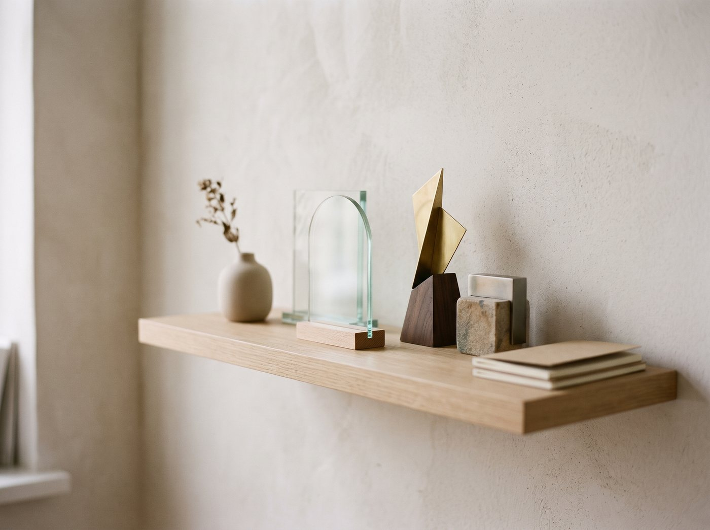
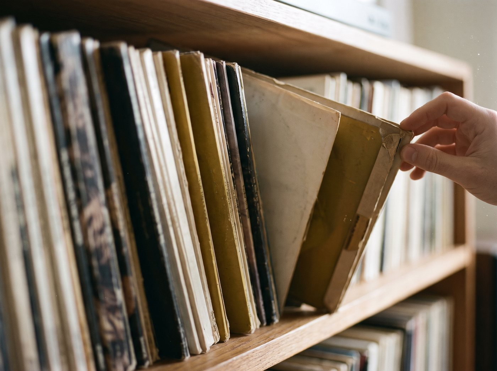
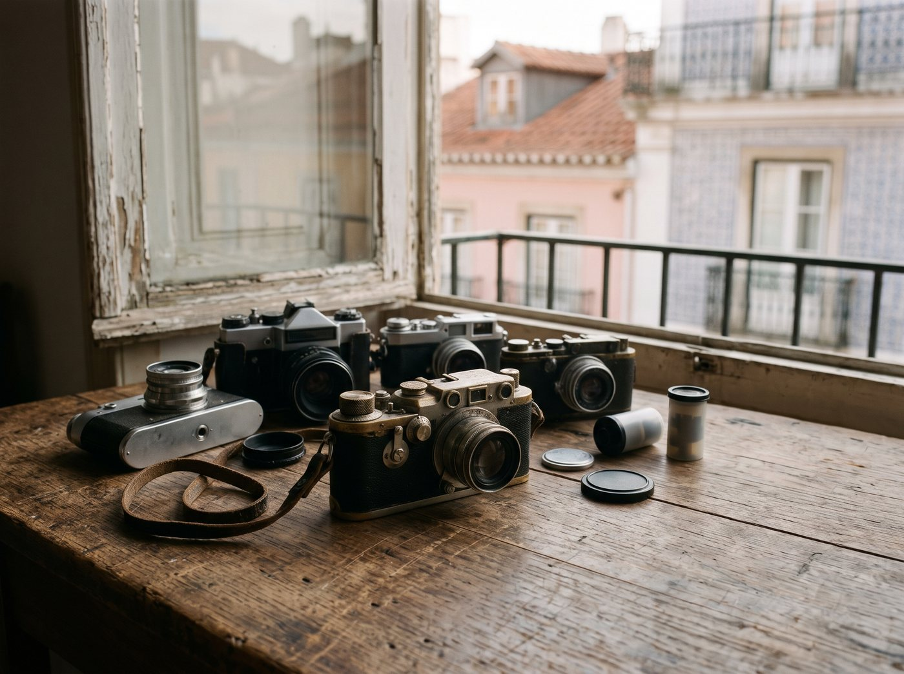
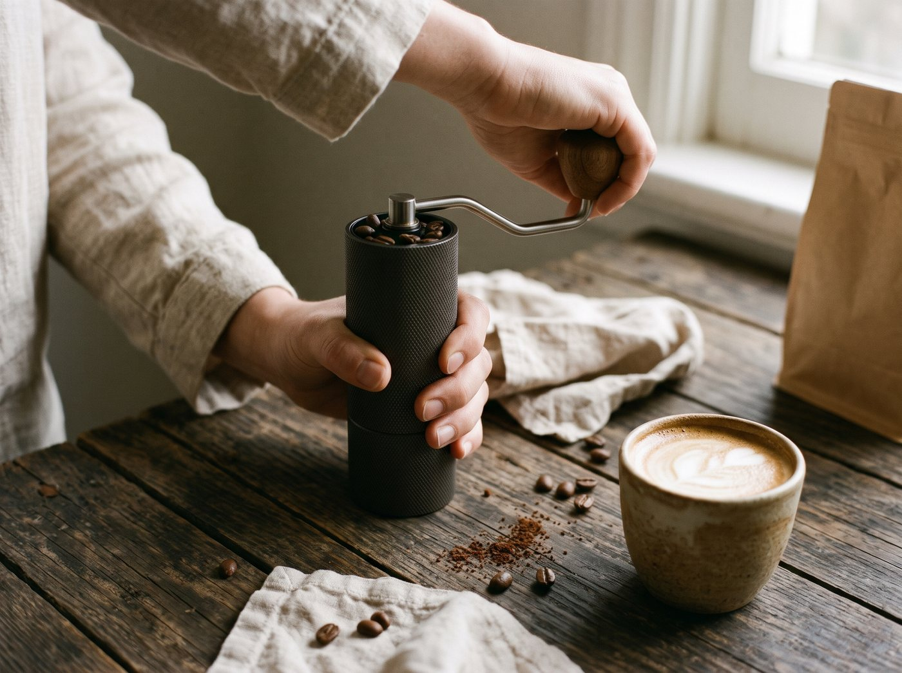
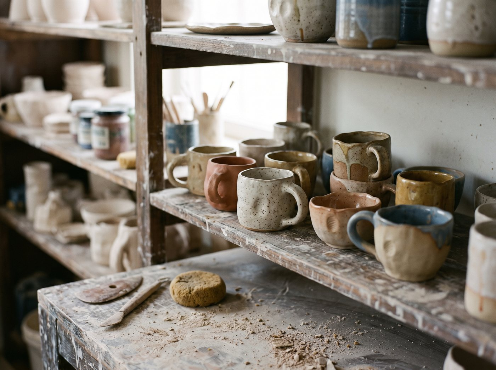
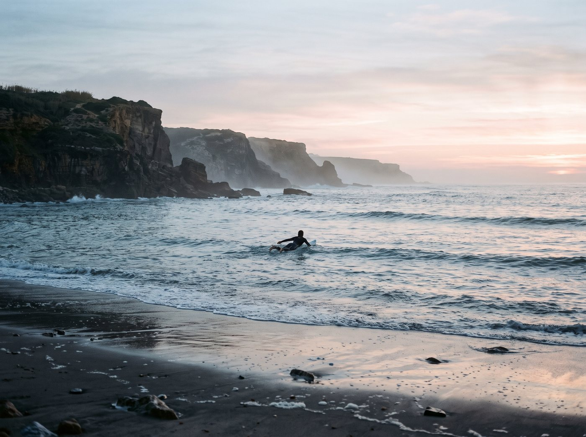
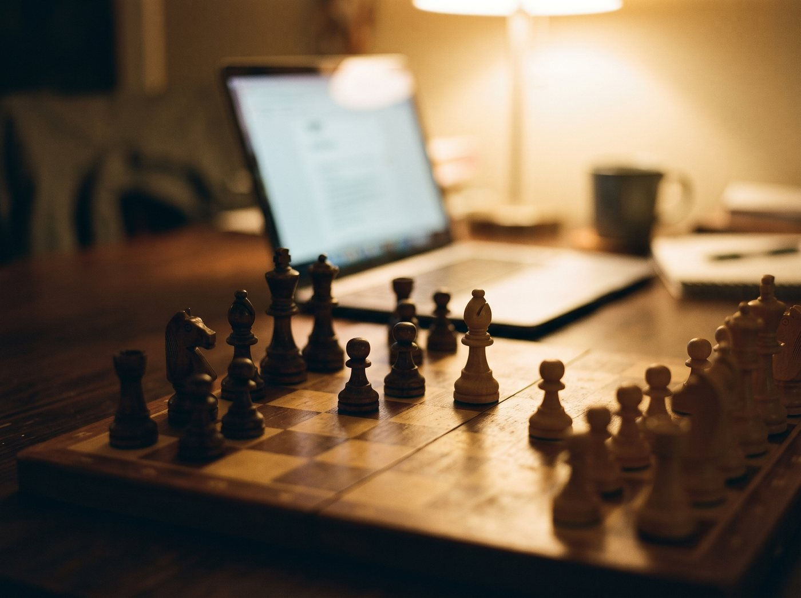
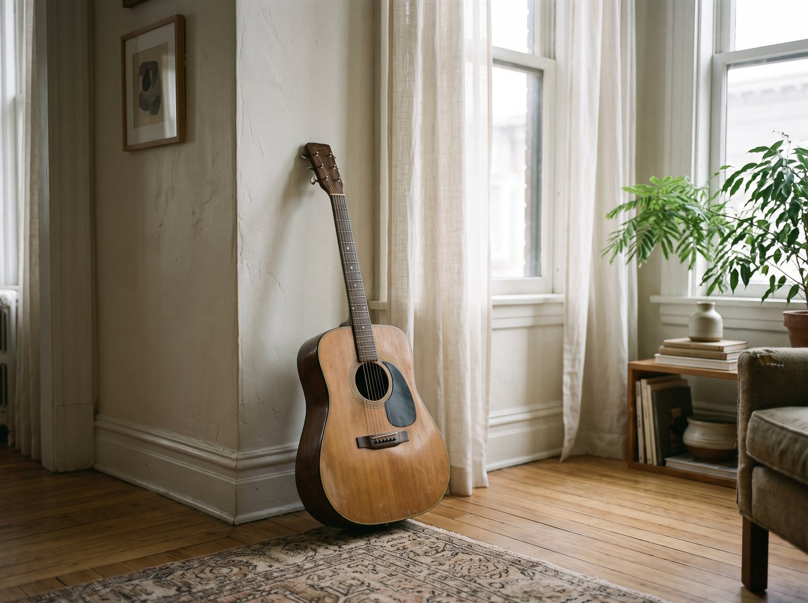
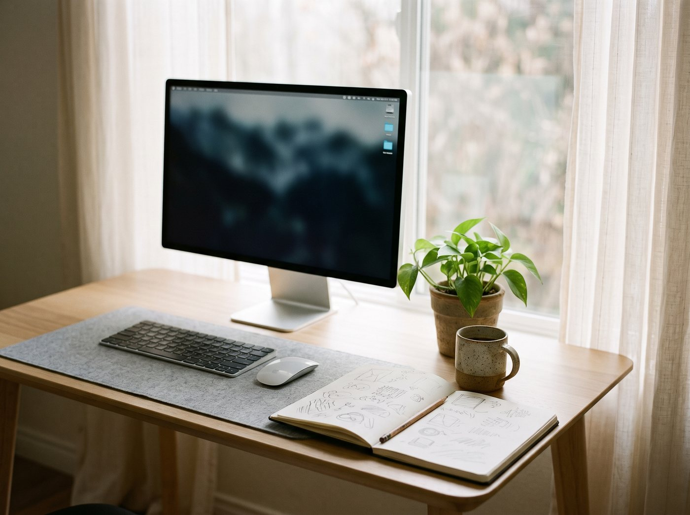

- Coffee snob
- Grew up on a surf beach
- Engaged to a lovely potter
- Owns too many cameras
- Bad at chess but
- very good at losing gracefully
- Still learning guitar...

Awards 🏆
Honestly, the little trophies changed a lot for me. I used to think nobody would ever look at the sites I made at 2 a.m. Then one random Tuesday a project got a Site of the Day and my inbox never really calmed down again.
Do I design for awards? No. Do I refresh the results page like a maniac on launch day? Absolutely. They mostly remind me that the people I build with trusted me with something they care about.
- They live on the shelf next to the cameras

Vinyl 🎶
Every project has a soundtrack. Northfold was all ambient Japanese records, Lumen Hall was loud post-punk, Gelato Nord was, embarrassingly, a lot of disco.
I buy one record every time a project launches. The shelf is now a pretty honest timeline of my career, with a few questionable phases.
- Currently spinning: something with too much saxophone

Cameras 📷
It started with my grandfather's old rangefinder and somehow became eleven cameras, two of which actually work properly.
Shooting film taught me patience and composition long before I opened a design tool. A lot of the photos you see in my early projects were taken on walks around Lisbon.
- No, I do not need another one. (I need another one.)

Coffee ☕
Two cups before any pixel gets pushed. I grind the beans by hand because it is the only five minutes of the morning nobody can email me.
If we ever work together, expect at least one long message about a roastery you have to visit.
- Flat white, no sugar, thank you

My partner 💛
Marta is a potter, which means our flat is half studio, half clay dust. She is the calmest person I know and the first one to tell me when a layout feels cold.
We met at a ceramics market where I bought a mug I did not need, then came back the next week to buy another one. We are getting married next spring.
- Every cup in this house is handmade, and slightly wonky

Surfing 🏄
I grew up ten minutes from the beach, so most of my childhood was spent waiting for waves. Surfing is still where I go when a design does not want to work.
Turns out sitting on a board for an hour, doing nothing, is the best brainstorming tool I own.
- Ericeira, early mornings, before the crowds

Chess ♞
I play every evening online and I lose most of those games. My rating has been stuck in the same place for three years, and I have made peace with that.
What I love is the planning: thinking three moves ahead, then watching it all fall apart. Pretty similar to client projects, really.
- Open to a friendly match, if you go easy on me

Guitar 🎸
I picked up the guitar at thirty-one, which is either brave or silly. I can play four songs well and about twenty songs badly.
Learning something new as an adult is humbling, and it keeps me patient with clients who are seeing a design process for the first time.
- Neighbours, I am sorry

Working space 💻
A desk by the window, one big screen, a sketchbook and a plant that somehow survives me. Most of my best ideas start as ugly drawings in that book.
I work remotely with teams in Europe, Australia and the US, so my calendar is a puzzle, but the coffee is always close.
- The plant's name is Gerald
Designing digital experiences with care, clarity, personality and being a reliable partner for agencies, studios, startups and brands across the world since 2016.
- Pixel Guild Independent of the Year Nominee (3)
- Webform Designer of the Year Nominee (2)
- Webby Nominee (2)
- Webby Honoree (1)
- Pixel Guild Site of the Month Nominee (3)
- Pixel Guild Site of the Day (11)
- Webform Website of the Month (2)
- Webform Website of the Day (12)
- Motion Index Pick of the Day (10)
- Folio Gallery Feature (15)
- Green Tick Design Award
- Lisbon Design Index
- Gridline Journal - Designer Spotlight
- Atlas Books: Interactive Design for Screens
- Pint of Craft | March 2025
- Folio Notes: Type of Silva
- Folio Notes: Lumen Hall
- Folio Notes: Oda Kawase Studio
- Pixel Guild Case Study | Salt & Signal
- Pixel Guild Case Study | Type of Silva
- Pixel Guild Case Study | Northfold
- Inspo Daily | Pulse Protocol
- Digital Art Direction
- Website Design
- Product & App Design
- Interactive Storytelling
- Website Motion & Animation
- Design Systems
- User Experience
- Nordhaus
- Atlantica
- Autonomo
- Verdeluz
- Kitebase
- Hanna Lind
- Ostra Group
- Bricolab
- Playmint
- Seedfield
- Salt & Signal
- and many more